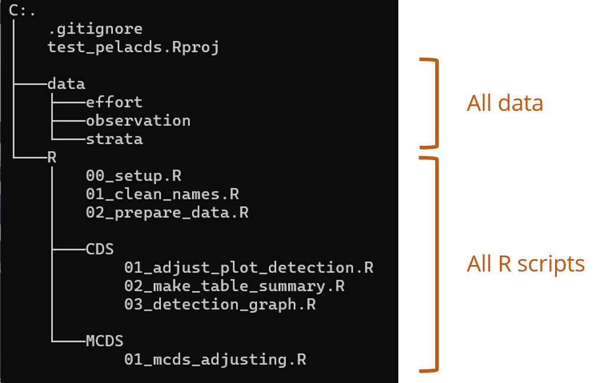

pelaverse
What is pelaverse ?
“pelaverse” is a group on La Rochelle university gitlab that gather a bunch of packages created by pelagis. Its name is a reference to tidyverse, “a collection of packages” helping to manipulate and visualize data. In the same spirit as tidyverse, pelaverse aims at gathering R packages used/created by pelagis for the use of pelagis and collaborators.
Aerial observation surveys
One of the main activity of pelagis lab is to survey marine megafauna in french oceans. To do so, aerial monitoring is carried out following a transect scheme (see figure above). From these observations along the transect it is possible to extrapolate abundance of each species/taxa using Distance sampling modelling.
We developed a shiny app to visualize observation campaign, it is possible to filter on date, species, area, …
A group of packages are dedicated to the analysis of aerial observation survey :
- {pelaCDS} : package for Conventionnal Distance Sampling analysis of observation data
- {pelaDSM} : package to adjust Density Surface Models
- {pelaKrig} : package to adjust Kriging models
An example with pelaCDS
We will have a look of what {pelaCDS}, a package of the pelaverse, have to offer.
- Get pelaCDS package
- Data used in this example
- Build a repository
- Analyze data
1. Get pelaCDS package
I assume you have installed R on your machine and a IDE of your convenience. To download {pelaCDS} just run :
Code
install.packages("remotes")
remotes::install_gitlab(
host = "https://gitlab.univ-lr.fr/",
repo = "pelaverse/pelacds"
)
2. Data used in this example
For this example, we will use the data of the pelaCDS package SPEE_data. This data contains a list of multiple data, we will keep only effort_raw and obs_with_sp corresponding to the effort transect of SPEE campaign and associated observations for 2 groups :
- Mola mola the sunfish with code
MOLMOLinspeciescolumn ofobs_with_sp - jellyfish with code
JELLYinspeciescolumnobs_with_sp
Code
library(pelaCDS)
library(ggplot2) # graphics
library(sf) # handle sf object
library(rnaturalearth) # coastlines
library(ggtext) # colour in title
library(patchwork) # multiple graph layout
data(SPEE_data)
fr <- ne_countries(country = "France", scale = 10)
europe <- ne_countries(continent = "europe",scale = 10)
effort <- SPEE_data$effort_raw
obs <- SPEE_data$obs_with_sp
title_size <- 10
map_zone <- ggplot() +
geom_sf(data = europe) +
geom_sf(
data = effort %>% st_union() %>% st_convex_hull(),
colour = "red",
linewidth = 1,
fill = NA
) +
coord_sf(
xlim = c(-12,15),
ylim = c(37,60)
) +
labs(title = "<span style='color: red;'>SPEE zone</span> according to Europe") +
theme_void() +
theme(plot.title = element_markdown(hjust = 0, size = title_size))
map_zone
Code
library(rphylopic)
mola_pic <- get_phylopic(uuid = "3e072993-d4fd-440a-8929-07bb19391542")
jelly_pic <- get_phylopic(uuid = "6f25228d-34f6-4a84-b52d-ce03d3fcd152")
map_effort <- ggplot() +
geom_sf(data = fr) +
geom_sf(data = effort) +
coord_sf(
expand = F,
xlim = c(-4, 0),
ylim = c(45, 47)
) +
labs(title = "Centroids of transect segments") +
theme_bw() +
theme(plot.title = element_markdown(hjust = 0, size = title_size))
map_obs <- ggplot() +
geom_sf(data = fr) +
geom_sf(
data = obs,
aes(colour = species),
alpha = 0.6,
show.legend = F
) +
geom_phylopic(
data = data.frame(
x = -0.5,
y = 46.8
), aes(x = x, y = y),
img = mola_pic,
fill = "red",
alpha = 0.7,
height = 0.3
) +
geom_phylopic(
data = data.frame(
x = -0.5,
y = 46.5
), aes(x = x, y = y),
img = jelly_pic,
fill = "forestgreen",
alpha = 0.7,
height = 0.3
) +
coord_sf(
expand = F,
xlim = c(-4, 0),
ylim = c(45, 47)
) +
scale_colour_manual(values = c("MOLMOL" = "red", "JELLY" = "forestgreen")) +
labs(title = "Observations of <span style='color: red;' >*Mola mola*</span> and <span style='color: forestgreen;' >Jellyfish</span>") +
theme_bw() +
theme(
plot.title = element_markdown(hjust = 0, size = title_size),
axis.title = element_blank()
)
map_effort | map_obs
3. Create a repository with all scripts prefilled
Code
library(pelaCDS)
create_cds_proj("c:/users/computer/Documents/my_cds_analysis")
By running the previous lines of code, you will create a repository my_cds_analysis with this tree :
Data have to be in data sub-directory (In our example, effort and observation are already in pelaCDS package).
Modification of prefilled scripts
Scripts have to be adapted for each case study.
4. Analysing data
After dropping data at the good spot in the repository, adapting scripts for your case study and launched scripts in the correct order, you can visualise the resulting adjustment of your model
Code
library(tidyverse)
library(readxl) # open excel files
library(rphylopic) # species silhouette
library(showtext) # Modify font
showtext.auto()
franklin <- google_fonts("Libre Franklin")
tab <- readxl::read_excel("data/table_summary.xlsx")
mola_pic <- get_phylopic(uuid = "3e072993-d4fd-440a-8929-07bb19391542")
jelly_pic <- get_phylopic(uuid = "6f25228d-34f6-4a84-b52d-ce03d3fcd152")
pic_data <- tibble(
x = c(1,1),
y = c(1300,75000),
height = c(200,10000),
taxon = c("MOLMOL","JELLY"),
img = c(mola_pic,jelly_pic)
)
tab <- tab %>%
separate(region,c("survey","cycle","sub_region","strate","session")) %>%
rename(N = animal_abundance,
N_min = `abon_min_(IC95%)`,
N_max = `abon_max_(IC95%)`) %>%
mutate(season = case_when(
session %in% c("1","5") ~ "winter",
session %in% c("2","6") ~ "spring",
session %in% c("3","7") ~ "summer",
session %in% c("4","8") ~ "autumn",
) %>% factor(levels = c("winter","spring","summer","autumn")),
year = as.factor(ifelse(cycle == 1,2019,2020)))
tab %>%
ggplot(aes(x = season, y = N, fill = year)) +
geom_bar(stat = "identity", position = position_dodge(width = 0.9)) +
geom_errorbar(aes(ymin = N_min, ymax = N_max),
position = position_dodge(width = 0.9),
width = 0.3,
) +
geom_phylopic(data = pic_data,
aes(img = img,
x= x,
y= y,
),
width = 0.75,
inherit.aes = F) +
labs(y = "Abundance") +
scale_fill_manual(values = c("2019" = "darkred", "2020" = "steelblue")) +
scale_y_continuous(expand = expansion(mult = c(0,0.1)), labels = scales::label_number()) +
facet_wrap(vars(taxon),scales = "free_y") +
theme_classic() +
theme(axis.title.x = element_blank(),
legend.title = element_blank(),
strip.background = element_blank(),
strip.text = element_blank(),
text = element_text(family = franklin, size = 22))